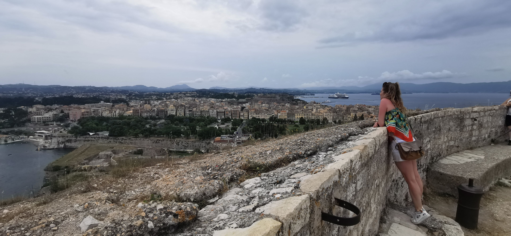

Despre Benitses

Benitses din Corfu, un fost sat de pescari unde muntii coboara pana la mare, cu izvoare de apa si vestigii istorice, pare sa fie un adevarat paradis elen. In Benitses, muzica traditionala se aude la tot pasul si casele grecesti sunt impodobite cu flori. Decorul unic si evenimentele din Benitses garanteaza un concediu de neuitat pentru cei care vin aici.
Benitses este o statiune foarte ieftina din Corfu si este recomandata familiilor cu copii sau cuplurilor care cauta relaxare. Hotelurile sunt modeste, preturile fiind pe masura (30-40€ pe noapte). Cam toate tavernele sau unitatile de cazare sunt afaceri de familie.
Experienta mea
In anul 2022, imi doream sa merg in Grecia, dar nu stiam unde. Am apelat la serviciile TripHunter, pe care le recomand tuturor.
Asa am ajuns in Corfu, si ulterior in Benitses. Am avut noroc de o super cazare, in spatele strazii principale, la Panos Apartaments. Gazdele erau niste oameni foarte veseli si plini de viata cu care am pastrat legatura.
Tot TripHunter ne-a recomandat si o taverna, unde se manca excepional de bine. Ulterior, zilnic am mancat fix in acelasi loc. Fructele de mare, carnea de berbecut, preparatele pe baza de feta, totul acompaniat de vin rosu, te faceau sa te simti in al 9 lea cer.